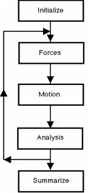

How Molecular Dynamics is Done
How Molecular Dynamics is Done

In molecular dynamics, the forces between molecules are calculated explicitly and the motion of the molecules is computed with a suitable numerical integration method on a computer. This is nothing more than solving Newton's equations of motion for the constituent atoms. The starting conditions are the positions of the atoms (taken for example, from a known crystal structure) and their velocities (generated from random numbers and scaled to the desired temperature). Following Newton's prescription, from the initial positions, velocities and forces, it is possible to calculate the positions and velocites of the atoms at a small time interval (a time step) later. From the new positions the forces are recalculated and another step in time made. The cycle has to be repeated many times in the course of a full simulation, usually for many thousands of time steps. It is worth noting that a single time step is usually of the order of 1 femtosecond (one thousandth of a millionth of a millionth of a second!)
The figure presents the molecular dynamics procedure in the form of a flow chart. The arrows track the operations that would be performed by a computer program, such as the Democritus program. The central operations which calculate forces, compute the motion of the atoms and perform statistical analysis on each new configuration of atoms, are usually repeated many times, as indicated by the backward flow of the arrows.
Calculation of the atomic forces in a molecular dynamics simulation is usually the most expensive operation. It is normally assumed that the forces between atoms are pair forces; that is, they act exclusively between pairs of atoms. (Higher order forces, involving three- or four body forces are also sometimes considered -especially in complex molecular structures.) If there are N atoms in the system, there will be at most N(N-1)/2 unique atom pairs, each with an associated force to compute. The time it takes to perform a molecular dynamics simulation on a computer is thus (approximately) proportional to N2. Usually however, a cut-off is applied at a certain interatomic separation, beyond which it is assumed the force is zero. This allows more efficiency in computing the forces, since all atom pairs need no longer be considered.
The mathematical formula for calculating the forces is almost always based on an empirical potential such as the Lennard-Jones potential. These empirical potentials are mostly obtained by mathematically fitting experimental bulk properties of the material to a theoretical, static model, although theoretical methods are sometimes used, based on quantum theory.
An important feature of molecular dynamics is a construct known as a periodic boundary condition which makes a small system, composed of a few hundred atoms, function as though it was part of a much larger system. There is thus continuity between the small sample of the system studied and the bulk system, which makes the results representative of the bulk material and not of an isolated (and minute!) piece. Closely allied to this technique is the idea of a minimum image, under which an atom only interacts with one equivalent image of any given atom in the periodic system.
After commencing a molecular dynamics simulation an equilibration period is necessary, usually lasting a few thousand time steps. During this period the system is coaxed towards the desired thermodynamic state point (defined by temperature and density) by a technique known as temperature scaling. After a sufficient equilibration period the system settles down to the desired condition. Then a production period begins in which the trajectory (or history) of the molecules is stored for later analysis. Many thousands of time steps (perhaps millions) may be needed to derive a statistically accurate description of the phenomenon of interest. The process by which properties of the bulk material are drawn out of the mass of trajectory data is known as ensemble averaging.
A great advantage of the molecular dynamics method, is that it explictly describes the molecular system as a function of time, this means it can directly calculate time dependent phenomena. The principal means of analysing time dependent behaviour is based on time dependent correlation functions.